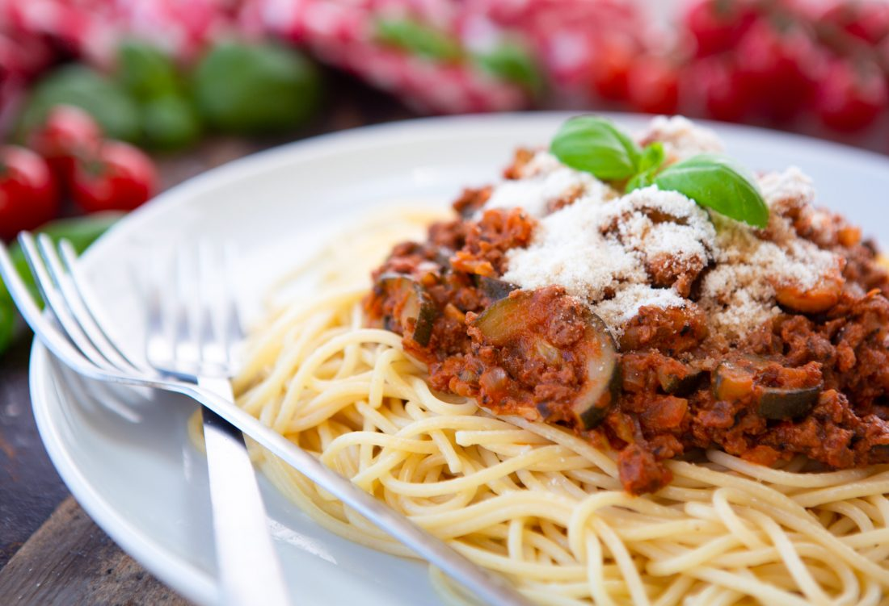

Vegan Spaghetti Bolognese

Description
A simple, budget and very tasty classic stand-by with the choice of either soya-based veggie mince OR whole lentils and with everything available from a health food shop or supermarket!
Vegan mince brands: Linda McCartney, Fry’s, Vivera, The Meat Free Farm, Naturli, Meat the Alternative, Ocado, Granose and lots of supermarket own-brands. Quorn mince is not yet vegan. There are also packet Bolognese mixes if you’re in a real hurry!
Serves 5 - Total cooking time 30 minutes
Ingredients
- 500g wholewheat spaghetti
- 2tbsp olive oil
- 1 large onion
- 1 stick of celery
- 3 cloves of garlic
- half red pepper
- 1 medium courgette
- 100g mushrooms
- 225g veggie mince or 1 tin of lentils
- 400g chopped tomatoes
- 1 tbsp tomato puree
- 2 veg stock cubes disolved
- 2 bay leaves
- 3 tsp dried basil
- 2 tsp dried oregano
Steps
- Fry the onion in the oil until soft
- Add the celery, red pepper (optional), courgette and mushrooms and cook until the mushrooms are golden brown
- Add the garlic and fry for a further minute
- If using the veggie mince option, add it now along with the tomato puree, red wine, passata, herbs, syrup and stock. Also, if using the nut or seed butter option, add now, stirring it around so it melts in. If using the lentils then add all of the ingredients mentioned (apart from the veggie mince) but leave the lentils until stage 6.
- Simmer for 10-15 minutes over a low heat
- If using the lentil option, add them now and let them cook in for a couple of minutes, stirring well.
- Serve on a bed of cooked spaghetti
Back